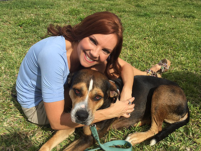
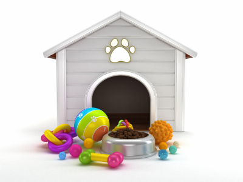
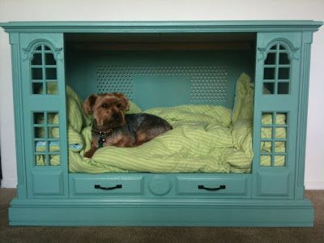

¿POR QUÉ QUIERES UNA MASCOTA?
Es importante pensar en la razón principal para querer compartir tu hogar con una mascota, adoptar un animal simplemente para que cuide la casa o por capricho de los niños generalmente termina en un gran error. Debes tener en cuenta que algunas mascotas pueden estar contigo 10, 15 o incluso 20 años.

¿TIENES TIEMPO PARA UNA MASCOTA?
Además de ser alimentados, perros y gatos necesitan de tu compañía, cariño y atención. Es importante considerar el tiempo que tendrás disponible para tu mascota, muchos animales terminan siendo abandonados por que sus dueños no pensaron en el factor tiempo.
¿ERES ECONÓMICAMENTE CAPAZ DE TENER UNA MASCOTA?
Comida, asistencia veterinaria, medicamentos, juguetes, vacunas, todos estos son gastos que se deben asumir cuando se está a cargo de una mascota además de los daños que pueden llegar a ocasionar en los muebles y cosas de tu hogar.

¿ES TU HOGAR UN SITIO APTO PARA TENER MASCOTA?
Es importante que todos los miembros de la familia estén de acuerdo con la llegada de una mascota, debes considerar si hay personas alérgicas o que no puedan convivir con perros o gatos. Debes tener identificado un sitio apto para que tu nueva mascota haga sus necesidades.

¿SERÁS UN DUEÑO RESPONSABLE?
Debes estar dispuesto a aceptar al animal como un nuevo integrante de la familia quien merece todo el amor y respeto, además debes cumplir con ciertas normas comunitarias que harán que tu mascota pueda convivir sin problemas con las personas que lo rodean.